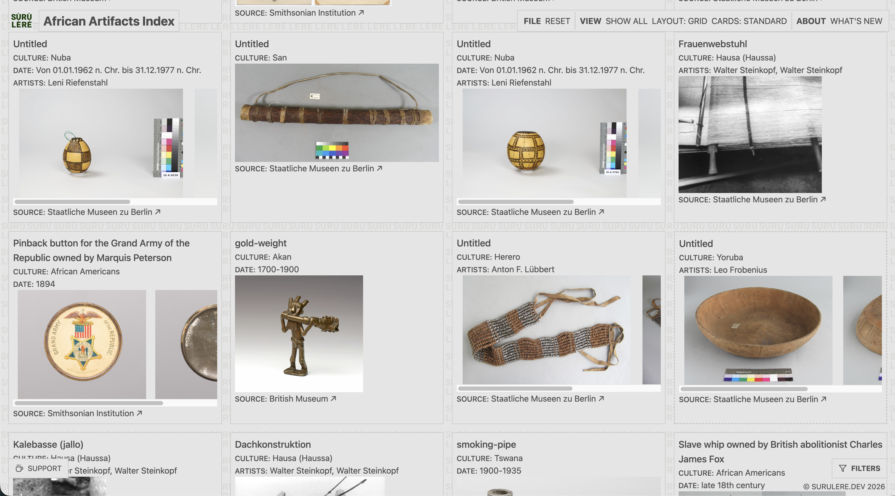
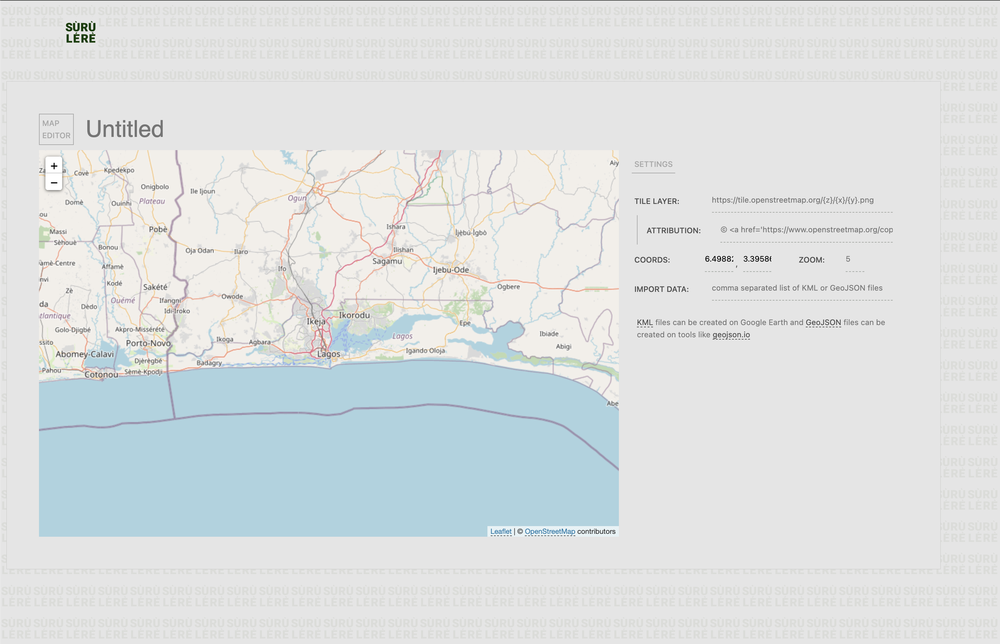
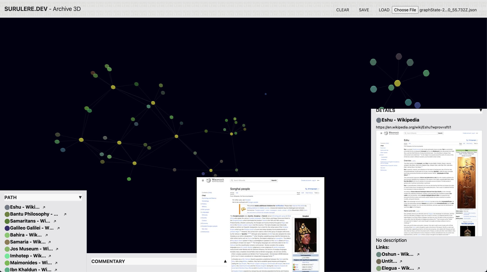
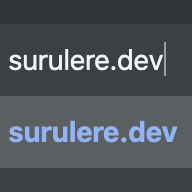

Top bar, media cards, modal and the reveal/cover page layout, from two stylesheets. The pattern behind this panel is one fixed layer; the header, this hero and the footer window reveal it, and content sections cover it.




Centred on desktop and docked to the bottom on phone, with square corners. It is a native <dialog>, so focus is trapped and Escape closes it without any script; su.js adds backdrop-click to close, and the page behind doesn't scroll.
<dialog>
su.js
.su-modal--lg is 1200px wide. Action cells sit left of close so they never scroll away; on phones their words hide and only the arrows show.
.su-modal--lg